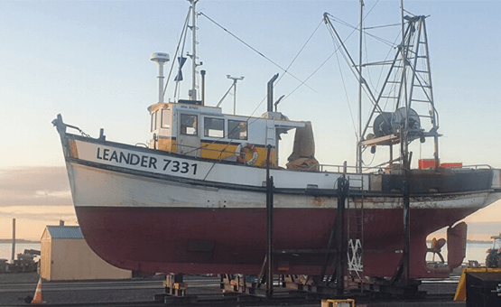
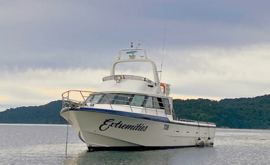
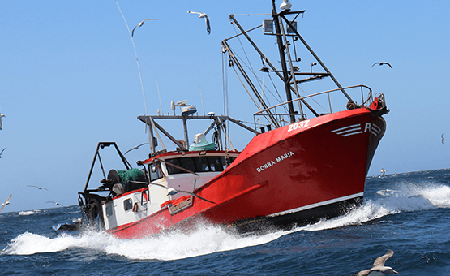
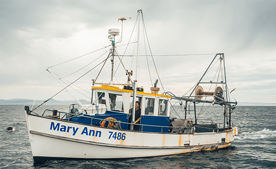
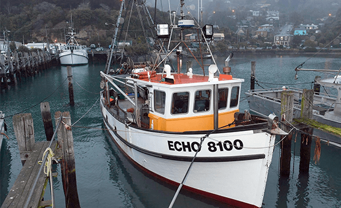

Sharn on the Leander

Home port : Bluff, Southland
|
The Catch : Monk, Sole, Brill, Flounder & Elephant
|
Skipper :Sharn Coote
|
Sharn got his first taste of fishing on the back deck of a Bluff Oyster boat as a kid but it was a life-changing motorbike accident in Australia that brought him back home to Bluff and to a career as a fisher.
With a grandad who was an oysterman and a deckie, and a fisherman uncle who he worked for for 10 years, it’s no surprise that Sharn loves to be at sea.
As he says, ‘it’s fresh air, beautiful scenery, and a sky full of stars every night.
And I’m my own boss.’
Brad on Extremities

Home Port: Bluff, Southland
|
The Catch: Blue Cod and Octopus
|
Skipper: Brad Johnson
|
Brad is a 6th generation fisher on his Rakiura dad’s side.
Growing up on the water he never gave another career much thought.
After 25+ years, ‘there’s never a time where I think I’d rather be anywhere else, even on a rough day, and there are plenty of those’.
He was taught by his dad and grandfather, and moved through the ranks as a deckie, a skipper and then a boat owner.
His latest vessel, Extremities, was picked up in Hobart and steamed home to Bluff by Brad and a few mates in 72 hours.
Ant on the Donna Maria

| Home Port: Carey’s Bay, Dunedin |
| The Catch: Sole, Flounder, Brill and Gurnard |
| Skipper: Ant Smith |
Ant was born and bred in Carey’s Bay and grew up around the local fishers. After a trade apprenticeship he went to crew for 6 months on a local boat and 30+ years later he’s still fishing.
Ant is currently President of his local Port Chalmers Fisherman’s Co-Operative Society (est. 1909). ‘We’re fishing the same grounds we have for more than 100 years and the fishery is in the best health I’ve seen it.
Modern technology has helped us to make really positive changes. The job satisfaction is immense, and the catch is the reward.’
Neil on the Mary Anne

| Home Port:Ōtākou, Dunedin |
| The Catch:Gurnard, Crayfish, Elephant & Sole |
| Skipper:Neil McDonald |
Neil’s Dad was a boat builder and he reckons he hung around the wharf long enough after he finished school that he got a job. Through his wife he’s privileged to fish Ngāi Tahu quota, and even after 40 years at sea, “I love it. Hate the politics. But I wouldn’t want to do anything else. It’s a lifestyle, not a job, and people need fresh fish. There’s more young people around keen to continue the legacy of fishing now than I’ve seen in my time, and that’s a really good thing.”
Gavin on the Echo

| Home Port:Carey’s Bay, Dunedin |
| The Catch:Tarakihi, Moki, Flounder, Sole, Gurnard, Monkfish & Elephant |
| Skipper:Gavin Heineman |
Gavin’s Dad was a fisherman, and he was at sea with him before he started school. Gavin crewed and then skippered for his Dad for 15 years, until he took over fully in 2017. He continues to fish the same grounds his dad did, alongside two crew. Taking care of our environment is high on his priority list. He won a 2017 Seabird Smart Award for Innovation for modifications he made to his vessel to protect seabirds. “I’m passionate about doing the job right. I’m not here to pillage the environment for today, I’m here for the future.”